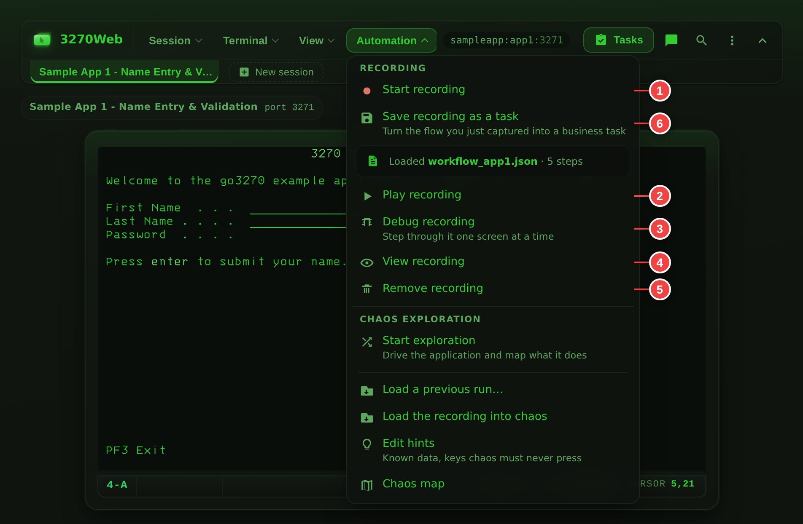

Recordings and Playback¶
3270Web can capture terminal actions as JSON recordings and run them later.
The whole loop in one take — record a flow, download it, load it back and replay it against the live host:
Recording and Playback Callouts¶

- Start recording
- Play recording
- Debug recording
- View recording JSON
- Remove loaded recording
- Save the recording as a business task
While a run is live, its progress shows in the strip under the menu bar and in the Workflow Status widget.
Record a Session¶
- Connect to the target host.
- Click Start recording.
- Perform your terminal actions.
- Click Stop recording.
- Optional: click Download to save the generated JSON file.
A finished recording can be turned into a Guided Business Task — named inputs, guarded steps and a named answer — with Save recording as a task. The wizard reads the recording, proposes what it can, and asks for the rest. A recorded field whose label names a secret arrives marked as one, so the password that was typed during the recording is not carried into the saved task.
Load a Recording¶
- Click Load recording.
- Choose a
.jsonfile. - Confirm the filename appears as loaded in the Automation menu.
- Click View recording to inspect the full JSON.
Play a Recording¶
- Load a recording.
- Click Play recording.
- Watch playback status in the strip under the menu bar and the Workflow Status widget.
- Use Pause/Resume in play mode if needed.
- Click Stop playback to end execution.
Debug a Recording (Step-by-step)¶
- Load a recording.
- Click Debug recording.
- Use Step to execute one action at a time.
- Watch current step number/type in the status indicators.
- Click Stop playback when done.
Debug mode is recommended for new or edited recordings.
Importing a Macro File¶
A shop that has been driving a green screen from an installed terminal emulator usually has a shelf of macros — and a shelf of macros is a reason not to move anywhere. Automation → Import a macro file… reads one and turns it into a recording, then tells you, line by line, what it would not translate.
The report is the point. A partial conversion that names the twelve lines needing a person is worth more than a confident-looking one that quietly drops four of them; the second kind is discovered in production, by a flow doing something nobody asked it to.
- Click Automation → Import a macro file… and choose the file.
- Read the report: how many steps it produced, and every line it left out.
- Close it. The recording is loaded, named after the macro.
- Run it with Debug recording first. A translated flow has never met this host.
The same translation is on the API at
POST /api/v1/macros/translate,
which takes no session and returns the recording itself — that is the one to
point at a directory of three hundred files.
What it reads¶
Macro files in this category are written in a BASIC-family scripting language
against a session automation object model. The object name varies between the
products that write them — Session, Sess0, whatever a variable was called
— so it is ignored; the method decides everything, and parentheses are
optional as they are in the language itself.
| The macro says | The recording gets |
|---|---|
PutString "USER01", 5, 20 |
FillString at row 5, column 20 |
MoveTo 5, 20 then SendKeys "USER01" |
the same, from the position the macro set |
SendKeys "<Enter>", <PF3>, <Clear>, <EraseEOF>… |
PressEnter, PressPF3, PressClear, PressEraseEOF… |
WaitForString "MAIN MENU", 1, 30 |
CheckValue — that text, at that position |
WaitHostQuiet 2500 |
2.5 seconds of delay on the step that follows |
WaitHostQuiet with no time |
nothing: playback waits for the keyboard at every step already |
Connect, Disconnect |
Connect, Disconnect |
a comment, Dim, Sub, End Sub, Option Explicit |
nothing, and no note — it is scaffolding, not an instruction |
Function keys are read as <PF3> or <F3>; both mean the same key to the
host.
The branches and loops it reads¶
A macro is not a straight line, and neither is a recording any more. Where the file says enough for the translation to be a translation rather than a guess, the decision steps come across too:
| The macro says | The recording gets |
|---|---|
If Session.Screen.GetString(5, 20, 8) = "APPROVED" Then … Else … End If |
If / Else / EndIf, comparing that row, column and length |
ElseIf … Then |
an Else holding a further If, closed at the end of the block |
If … Then <statement> on one line |
the same branch, around that one statement |
Do While … … Loop, While … … Wend |
While / EndWhile |
Do Until … … Loop |
While testing the exact opposite |
balance = Session.Screen.GetString(12, 20, 10) |
SetVariable balance, reading that region |
label = "REFER", copy = balance |
SetVariable, holding the literal or the other variable |
If balance > 1000 Then |
If comparing the variable, numerically |
Session.Screen.PutString balance, 9, 20 |
FillString typing ${balance} at row 9, column 20 |
Exit Sub, in a file that declares one routine |
Stop |
The condition is the part that has to be readable. An If or a While in a
recording compares one thing — a named row, column and length on the
screen, or a variable this file has already set — against one literal
value. That is what GetString(5, 20, 8) = "APPROVED" says exactly, which is
why it converts. A condition that calls a function, joins two tests with And,
or searches the whole screen says none of it, and is reported instead.
A branch that does not translate takes its body with it
This is the one rule worth reading twice. If the condition on an If
cannot be translated, the statements inside it are left out too, and
the report says how many.
The alternative is the worst outcome available: the If is dropped, the
statements inside it survive, and steps that ran on some days now run on
every day — against a live host, confidently, with a report that mentioned
the branch but not that its contents had escaped it.
So a reported branch is a hole in the recording, not a line to tidy up later. Write it by hand against the step types in Decisions, variables and loops, and run the result in Debug recording before it matters.
What it will not do, and why¶
Each of these is reported against its line rather than approximated:
- A condition that is not a comparison.
If Session.Screen.Search("READY") Thenasks a question a recording cannot: which row and column would it be comparing? So isTrim(GetString(…)) = "A", and so is any condition joining two tests withAnd,OrorNot— a recording tests one thing at a time, and the same branch written as nestedIfs converts. - Counted loops.
For i = 1 To 10counts, and a recording has no arithmetic to count with. The loop that translates is the one that repeats while the screen still says something. Select Case. Several cases decided at once; a recording decides one comparison at a time. Written as nestedIfs it converts.- A loop tested at the bottom.
Do … Loop Whileruns its body before it tests anything, and a recording'sWhiletests first — a translated one would run the body once even where the macro would not have. - A loop that leaves early.
Exit Dohas no counterpart: a recording'sWhilehas no way out but its own condition, so a translated loop would carry on where the macro stopped. - A file that jumps.
GoTo,GoSub,ResumeandOn Errorland somewhere a list of steps cannot follow, and skipping the branch a jump sits in removes the jump but not the lines it was jumping over. One of them anywhere in the file means no branch or loop in it is translated; the ordinary steps still are, in the order the file writes them. - A value that has to be computed.
total = balance + 1is not a value this file can hand over: aSetVariablestep remembers a literal, another variable, or the text at a named row, column and length. The name is then forgotten rather than left pointing at what it held before, so a later condition reading a stale value is reported instead of quietly working. - A variable that may not have been set. One assigned inside a branch is not known after it: the branch may not run, and a step reading a variable nothing set stops the run against a live host.
- Text typed with no known cursor position.
SendKeys "USER<Tab>PASS"typesUSERwhere the macro last put the cursor, andPASSinto whichever field the host moved to — which is not knowable from the file. The first half translates; the second is reported. Nothing is ever emitted with the coordinates left off, because an absent position reads as row zero to everything downstream, and typing into the wrong field is exactly what this rule prevents. - A wait for text with no position.
WaitForString "BALANCE"searches the whole screen; a recording checks a named row and column. Add them and it translates. - Dialogs. A replayed recording has nobody at the keyboard to answer a
MsgBox. - Anything outside the terminal session — files, other applications, the operating system.
Differences in meaning worth knowing¶
The report names each of these when it applies:
- A wait for text becomes a check, not a wait. Playback waits for the keyboard to unlock before every step, but it does not poll for text. If the screen behind a check is slow to draw, give that step a delay.
- Wait times are read as milliseconds. A macro that counted in seconds replays faster than it ran, which is the safer way to be wrong; the step delays in the recording are where to correct it.
- A comparison against the screen ignores the field's padding. The macro
compared the padded value, so
GetString(5, 20, 8) = "APPROVED"was false when the field was wider than the word. A recording trims first, which is almost always the comparison that was meant — but it is not the same comparison. - Every loop is bounded. A
Whilestill true after 100 passes ends the run rather than repeating for ever. SetMaxIterationson that step if the flow genuinely needs more. - A file of several routines becomes one flow. Their steps follow one
another in the order the file writes them, rather than in the order
something called them — and
Exit Subis reported rather than translated, because what it returns to is not in the file.
The translated recording is a recording like any other — edit it in View recording, save it as a Guided Business Task, or feed it to chaos exploration.
Treat an imported recording as a secret
A macro that logs in has the password in it, and so does the recording it becomes — and so does any report line quoting that statement. The same caution applies as to recordings that fill sensitive fields.
Remove a Loaded Recording¶
Click Remove recording to clear the currently loaded file from the session.
Workflow Status Widget¶
The Workflow Status panel shows:
- Current step and total steps
- Current action type
- Delay range and applied delay (when present)
- Recent playback events
When you connect to a host the widget starts minimized so it stays out of the way until you need it.
You can:
- Open it from the status indicator
- Minimize/maximize it
- Enable or disable tracking
Recording JSON Basics¶
A recording includes a Steps array of actions.
Example:
{
"Host": "sampleapp:app1",
"Steps": [
{ "Type": "Connect" },
{
"Type": "FillString",
"Coordinates": { "Row": 5, "Column": 21 },
"Text": "User"
},
{ "Type": "PressEnter" },
{ "Type": "Disconnect" }
]
}
Common action types:
FillStringPressEnterPressTabPressPF<n>(for examplePressPF3)
Decisions, Variables and Loops¶
Everything above describes a straight line: fill this field, press that key, check that text. That is the whole of what a recorded flow needs when the answer is the same every time.
It is not the whole of what a flow needs when the host has an opinion. Read
the balance, and take a different path if it is under the limit. Press Enter
until the screen stops saying MORE. Skip the confirmation panel on the days
the host does not draw one. Those need a recording that can decide, and the
step types below are that.
They are ordinary steps in the same Steps array — nothing nests, and a
recording that makes no decisions is byte-for-byte the file it always was.
| Step | What it does |
|---|---|
SetVariable |
Remember a literal, or the text at a place on the screen |
If … Else … EndIf |
Run one group of steps or the other |
While … EndWhile |
Repeat a group of steps while something stays true |
Stop |
End the run here, and say why |
Reading something off the screen¶
SetVariable with Coordinates reads that region of the screen and trims the
padding a field carries; with Text instead, it stores that literal.
{
"Type": "SetVariable",
"Variable": "balance",
"Coordinates": { "Row": 12, "Column": 40, "Length": 12 }
}
Anywhere a later FillString or CheckValue writes ${balance}, the value
goes in:
{
"Type": "FillString",
"Coordinates": { "Row": 5, "Column": 21 },
"Text": "ACCT ${account}"
}
A name that has not been set is an error that ends the run, rather than an
empty string quietly typed into a field. To type the two characters ${
literally, write $${.
Add "Sensitive": true to a SetVariable step that reads a password or
anything else that should not be written down. The run still uses the value —
${name} fills the field it was read for — but the run log and the status
endpoint say the variable was set rather than what it was set to.
Asking a question about the screen¶
If and While compare one thing against another. The left-hand side is
either Coordinates (a region of the screen, trimmed) or Variable (one you
set earlier) — one or the other, never both. Text is what it is compared
against, and may itself contain ${…}.
[
{
"Type": "If",
"Coordinates": { "Row": 24, "Column": 2, "Length": 9 },
"Operator": "contains",
"Text": "NOT FOUND"
},
{ "Type": "Stop", "Text": "the host has no record of that account" },
{ "Type": "EndIf" }
]
The comparisons are equals, notEquals, contains, notContains,
startsWith, endsWith, isEmpty, isNotEmpty, greaterThan,
greaterOrEqual, lessThan and lessOrEqual. The symbolic spellings
(==, !=, >, >=, <, <=) mean the same thing. Add
"IgnoreCase": true to fold case; comparisons are case-sensitive without it.
The four numeric comparisons read a number the way a green screen writes one:
grouped with commas, and negative by a leading sign, a trailing one, or a pair
of brackets — 1,240.55, 45.00-, (12) and 1,000CR all parse. A value
that is not a number ends the run rather than being compared as zero, because
a screen that did not say what the recording expected is worth stopping for.
Repeating until the host is done¶
[
{
"Type": "While",
"Coordinates": { "Row": 24, "Column": 70, "Length": 4 },
"Operator": "equals",
"Text": "MORE",
"MaxIterations": 20
},
{ "Type": "PressPF8" },
{ "Type": "EndWhile" }
]
Every While is bounded. MaxIterations sets the bound, up to 10000; without
it, a loop stops after 100 passes. A loop that reaches its bound ends the run
and says so — a host that never changes its screen would otherwise hold the
session until somebody noticed.
What stops a run¶
Everywhere else in playback, a step that fails is logged and the run carries
on to the next one. That is right for a step that acts and wrong for a step
that decides: carrying on past an If whose condition could not be evaluated
means guessing which branch was wanted, and the wrong guess types real values
into a real host. So these end the run instead:
- a condition that cannot be evaluated — a region off the screen, a variable that was never set, a comparison of a number against text
- a
${name}in a step's text that names nothing the run has set - a
Whilethat reaches its iteration bound - a
Stopstep, which is the deliberate one; it counts as a completed run, and itsTextis the reason in the log
Structural mistakes are caught earlier still. A recording whose blocks do not close, or whose comparison names an operator that does not exist, is refused when it is loaded — before it has typed anything anywhere. The message names the step number.
Watching it decide¶
The Workflow Status widget carries each decision as it is made — which branch
an If took and on what value, which pass a While is on, what a
SetVariable read. GET /workflow/status returns the same events, plus
playbackVariables: what the run knows, which survives the end of the run so
"what did it read?" is answerable afterwards.
Variables are per run
A run starts knowing nothing. That is what makes a replay a replay — a recording that behaved differently on its second run because of something left over from its first would be much harder to trust.
Business metadata fields¶
Workflows generated from a cataloged business function (see AI Chat — Business Understanding) carry optional top-level metadata. All fields are ignored by playback, so older workflows and older 3270Web versions remain fully compatible:
{
"Host": "sampleapp:app1",
"Port": 3270,
"Name": "Account inquiry",
"Description": "Look up an account balance",
"BusinessFunction": "Account inquiry",
"Parameters": [
{ "Name": "account_number", "Value": "1234", "Row": 5, "Column": 21, "Length": 8 }
],
"Steps": [ { "Type": "Connect" }, { "Type": "PressEnter" }, { "Type": "Disconnect" } ]
}
Parameters documents which business input produced which FillString value and where it was written, making the file self-describing.
Parameters whose value lands in a hidden (password-style) field, or in a field the AI marked sensitive, are exported with "Sensitive": true and an empty Value in the metadata. The FillString step itself still carries the value — playback needs it — so treat generated workflow files that fill sensitive fields as secrets.
Troubleshooting Playback¶
- Confirm host and port are correct.
- Confirm terminal model matches the one used when recording.
- Confirm screen layout and field coordinates still match host screens.
- Add delays for timing-sensitive screens.
- Use Debug mode to find the first failing step.
Related: Chaos Exploration¶
Use Chaos mode when you need to discover unknown screen paths or generate new workflow steps automatically.
- Start/stop chaos from the Automation menu
- Review granular attempt status in the Workflow Status widget
- Export the generated JSON and load it back as a standard workflow
See Chaos Mode for full details.